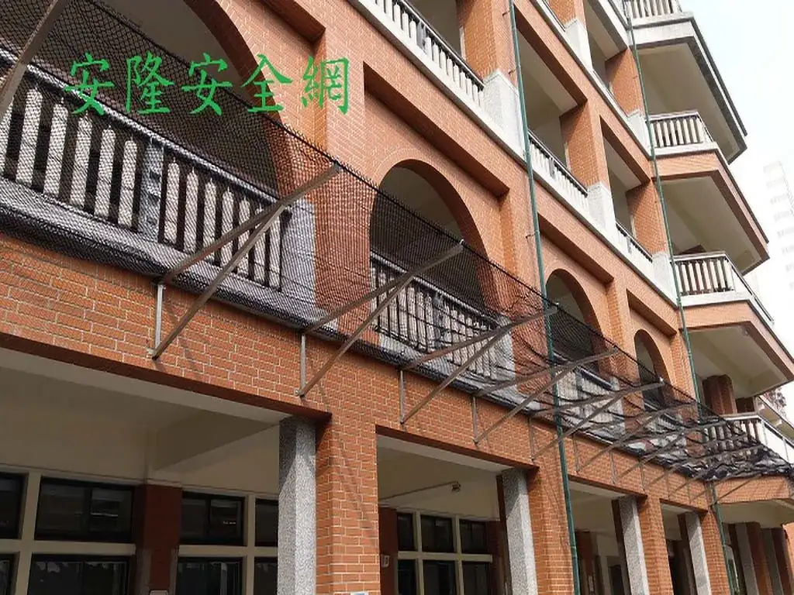
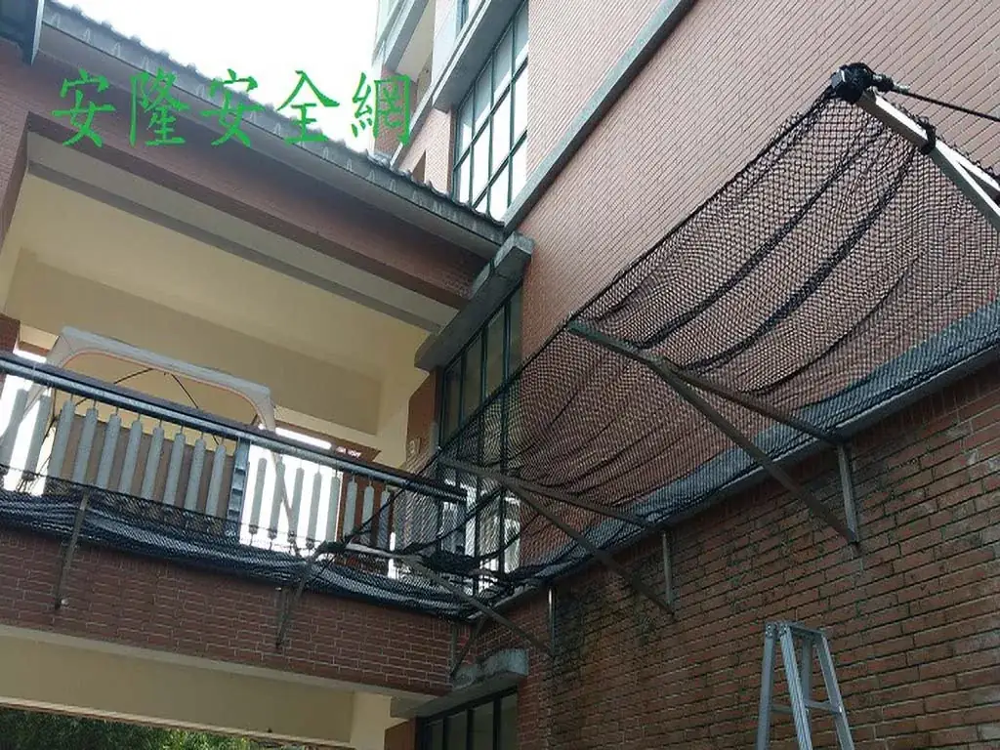
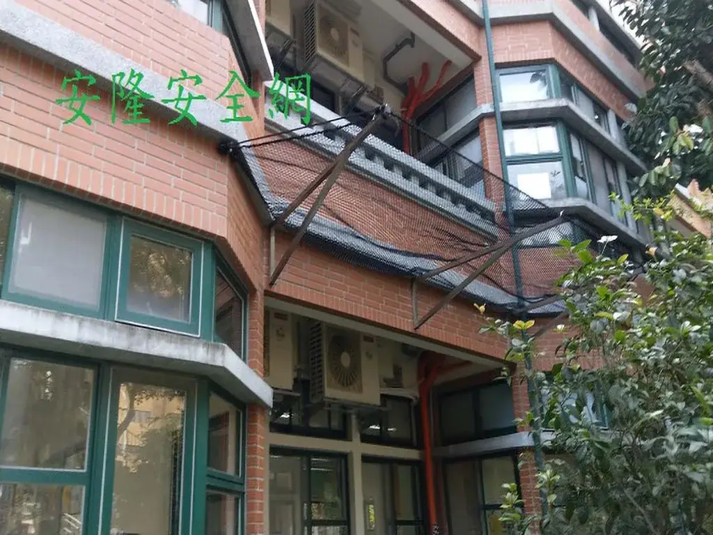

台北教育大學附設國民小學 校舍防護網
校舍外側走廊及開放區域設置立面防護網，補足欄杆外側的防護範圍。



施工目的與現場做法
從既有工程照片可見，防護網沿校舍外側走廊及欄杆開放區域連續設置，藉由立面包覆降低孩童靠近邊緣時的風險，並避免物件由高處開口掉落。
校園工程評估除防墜目的外，也要確認逃生與維修動線、外牆支架與網面固定狀況、孩童可能接觸的位置，以及長期日曬雨淋後的定期檢查方式。
照片與資料說明
現有交接資料保留完整完工照片，但未記載原案年份、網材線徑、網目與驗收文件。本頁不填入無法證實的規格；如需相同工程，仍須依校舍現況重新設計。